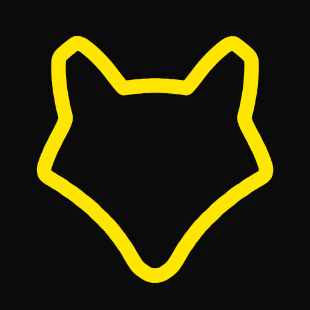

在读，方向是计算机交叉领域。
把想法做成能跑起来的东西。
遇到不懂的，就想弄明白。
ancientmoo8@qq.com
一颗会转的小星球 —— 上面写着我，和我在意的事。
拖动它，让它转起来。
关于我的一些小碎片，随手撒在这里 —— 鼠标停上去，可以让它们歇一会儿。
这是我的数字分身，它记得我做过的作品、喜欢的东西和在意的事。
随便问一句 —— 它 24 小时都醒着。
分身用站内知识库即时回答（离线也能用）；需要真人回复，请用下面的 反馈表。
FEEDBACK留下你想说的：喜欢哪一页、哪里卡住、或者想看到什么。匿名也行，我会一条条看完。